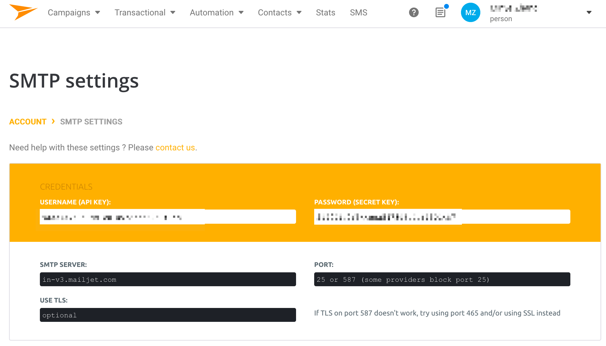
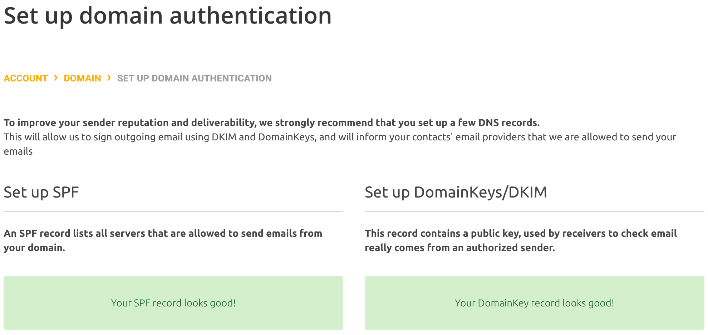
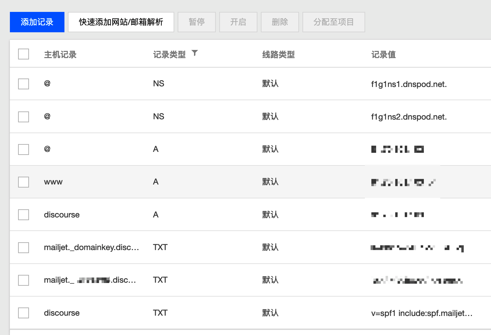
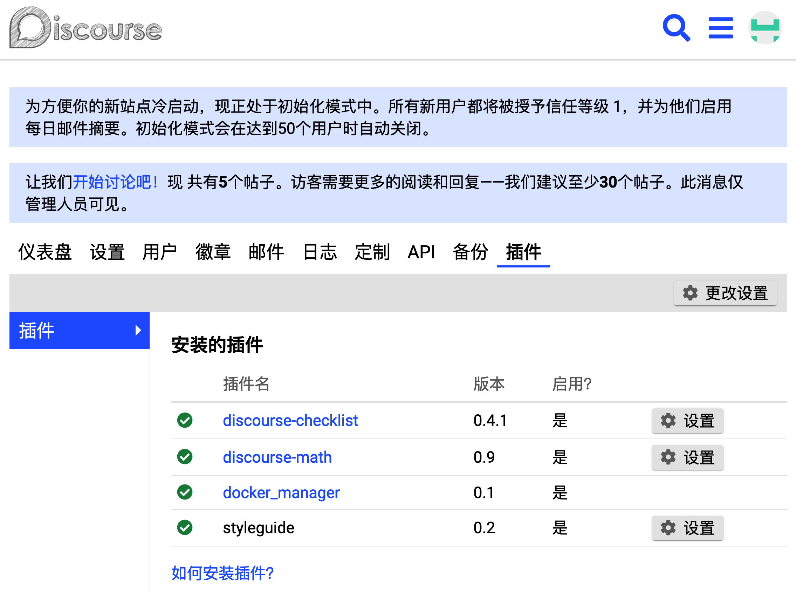

<!DOCTYPE HTML>
<html>
<head>
  <meta charset="utf-8">
  
  <title>在 Ubuntu 云服务器上搭建 Discourse 论坛 | Shigaro</title>
  <meta name="author" content="minyez">
  
  <meta name="description" content="minyez&#39;s blog on life, science and programming">
  
  
  <meta name="viewport" content="width=device-width, initial-scale=1, maximum-scale=1">

  <meta property="og:title" content="在 Ubuntu 云服务器上搭建 Discourse 论坛"/>
  <meta property="og:site_name" content="Shigaro"/>

  
    <meta property="og:image" content=""/>
  

  
  
    <link href="/assets/images/favicon/icon.png" rel="icon">
  
  
  <link rel="stylesheet" href="/css/bootstrap.min.css" media="screen" type="text/css">
  <link rel="stylesheet" href="/css/bootstrap.css" media="screen" type="text/css">
  <link rel="stylesheet" href="/css/font-awesome.css" media="screen" type="text/css">
  <link rel="stylesheet" href="/css/style.css" media="screen" type="text/css">
  <link rel="stylesheet" href="/css/responsive.css" media="screen" type="text/css">
  <link rel="stylesheet" href="/css/highlight.css" media="screen" type="text/css">
  <link rel="stylesheet" href="/css/google-fonts.css" media="screen" type="text/css">
  <!--[if lt IE 9]><script src="//html5shiv.googlecode.com/svn/trunk/html5.js"></script><![endif]-->

  <script src="/js/jquery-2.0.3.min.js"></script>

  <!-- analytics -->
  
<script>
  (function(i,s,o,g,r,a,m){i['GoogleAnalyticsObject']=r;i[r]=i[r]||function(){
  (i[r].q=i[r].q||[]).push(arguments)},i[r].l=1*new Date();a=s.createElement(o),
  m=s.getElementsByTagName(o)[0];a.async=1;a.src=g;m.parentNode.insertBefore(a,m)
  })(window,document,'script','//www.google-analytics.com/analytics.js','ga');
  ga('create', 'UA-111612868-1', 'auto');
  ga('send', 'pageview');
</script>


<script async src="//busuanzi.ibruce.info/busuanzi/2.3/busuanzi.pure.mini.js">
</script>


</head>

 <body 
>
  <nav id="main-nav" class="navbar navbar-default navbar-fixed-top" role="navigation">
  <div class="container">
    <button type="button" class="navbar-header navbar-toggle" data-toggle="collapse" data-target=".navbar-collapse">
      <span class="sr-only">Toggle navigation</span>
      <span class="icon-bar"></span>
      <span class="icon-bar"></span>
      <span class="icon-bar"></span>
    </button>
    <a class="navbar-brand" href="/"></a>
    <div class="collapse navbar-collapse nav-menu">
      <ul class="nav navbar-nav">
        

        <!-- Categories -->
        
        <li>
          <a href="/" title="Shigaro's Home"
            style="font-weight: normal; font-family: Calibri,Arial; font-size: 18px">
            <i class="fa fa-bank"></i>Home
          </a>
        </li>
        
        

        <!-- Categories -->
        
        <!-- Archives -->
        <li>
          <a href="/archives" title="All the articles."
            style="font-weight: normal; font-family: Calibri,Arial; font-size:     18px">
            <i class="fa fa-archive"></i>Archives
          </a>
        </li>
        
        

        <!-- Categories -->
        
        <!-- Tags -->
        <li>
          <a href="/tags" title="All the tags."
            style="font-weight: normal; font-family: Calibri,Arial; font-size:     18px">
            <i class="fa fa-tags"></i>Tags
          </a>
        </li>
        
        

        <!-- Categories -->
        
        <li class="dropdown">
          <a href="/categories" class="dropdown-toggle" data-toggle="dropdown" title="All the categories."
            style="font-weight: normal; font-family: Calibri,Arial; font-size:     18px">
            <i class="fa fa-folder"></i>Categories
            <b class="caret"></b>
          </a>
          <ul class="dropdown-menu">
            <li class="divider"></li>
            <li><a href="/categories" style="font-size: 20px; font-family: 'Calibri Light',Arial">All
                Categories</a><span></span></li>
            <li class="divider"></li>
            
            <li><a href="/categories/Software/"
                style="font-size: 15px; font-family: 微软雅黑">Software<span></span></a></li>
            
            <li><a href="/categories/Programming/"
                style="font-size: 15px; font-family: 微软雅黑">Programming<span></span></a></li>
            
            <li><a href="/categories/Comment/"
                style="font-size: 15px; font-family: 微软雅黑">Comment<span></span></a></li>
            
            <li><a href="/categories/Algorithm/"
                style="font-size: 15px; font-family: 微软雅黑">Algorithm<span></span></a></li>
            
            <li class="divider"></li>
          </ul>
        </li>
        
        

        <!-- Categories -->
        
        <li>
          <a href="/about" title="About me."
            style="font-weight: normal; font-family: Calibri,Arial; font-size: 18px">
            <i class="fa fa-user"></i>About
          </a>
        </li>
        
        
      </ul>
    </div>
  </div> <!-- container -->
</nav>
<div class="clearfix"></div>
  <div class="container">
  	<div class="content">
    	 


	
		<div class="page-header">		
			<h1> 在 Ubuntu 云服务器上搭建 Discourse 论坛</h1>
		</div>		
	


<div class="row post">
	<!-- cols -->
	
	<div id="top_meta"></div>
	<div class="col-md-9">
	

	<!-- content -->
	<div class="mypage">		
	  		

	  <link rel="stylesheet" type="text/css" href="/css/hint.min.css"><div class="alert alert-success"><i class="fa fa-lightbulb-o  float-left"></i>  <p>基于腾讯云的 Discourse 论坛搭建.</p>
</div>
<a id="more"></a>
<p>Discourse 论坛是近些年来比较流行的一款开源论坛应用程序，拥有很完善的用户互动和管理员功能，也提供了丰富的插件和扩展入口。</p>
<p>笔者认为论坛形式是促进学术交流的一个非常重要的手段，以往课题组同学老师之前交流一般都是在线下或者微信群，不利于记录和搜索，不利于知识积累和知识库的构建，因此考虑使用这款开源应用搭建一个用于课题组同学内部交流的论坛.</p>
<p>这里简单记录笔者的 Discourse 论坛搭建流程，使用的是官方提供的 Docker 容器安装方法.</p>
<h2 id="准备工作"><a href="#准备工作" class="headerlink" title="准备工作"></a>准备工作</h2><p>域名和云服务器是搭建网站的一般操作。因为这个页面就是搭在 <a href="https://console.cloud.tencent.com/" target="_blank" rel="noopener">腾讯云</a> (TC) 上的，因此这里域名和云服务器都是用的 TC.</p>
<p>Discourse 比较特殊的地方是它需要邮件服务器进行通讯，包括用户注册和网站备份下载，因此我们也需要一个免费的邮件服务器。这里我使用的是 <a href="https://app.mailjet.com/" target="_blank" rel="noopener">mailjet</a>.</p>
<h3 id="云服务器"><a href="#云服务器" class="headerlink" title="云服务器"></a>云服务器</h3><p>笔者购买的是单核 2GB, 带宽 3M 的轻量应用服务器，对于小规模的论坛和网站是比较合适的。系统选择 Ubuntu 20.04 LTS. 亲测 CentOS 和 Fedora 在安装 Docker 过程中会遇到一些问题，比如无法找到 <code>docker.io</code> 命令等。在 Ubuntu 上基本是一次通过的。为方便说明，这里假设服务器公网 IP 为 <code>m.n.p.q</code>.</p>
<h3 id="域名解析"><a href="#域名解析" class="headerlink" title="域名解析"></a>域名解析</h3><p>按照自己喜好和预算购买域名即可。唯一可能需要注意的是 Discourse 对 <code>.work</code> 域名的解析似乎很慢，在初始化 Discourse 时出现无法解析域名的情况，故不推荐。此外建议尽快进行域名实名认证，否则容易被管局封停，进入 <code>serverHold</code> 状态而无法解析，这之后不仅需要实名还需要进行备案，比较麻烦.</p>
<p>为了方便后面的说明，这里假设注册的域名为 <code>domain.abc</code>. 在 DNS 记录中添加主机名分别为 <code>@</code> 和 <code>discourse</code>, 值均为 <code>m.n.p.q</code> 的 <code>A</code> 记录.</p>
<h3 id="邮件服务器"><a href="#邮件服务器" class="headerlink" title="邮件服务器"></a>邮件服务器</h3><p>在 mailjet 上注册账户，注册成功后就可以看到自己的 SMTP 用户名和密码，需要在初始化 Discourse 时填入.</p>
<p><figure class="null"><figcaption>mailjet 设置界面</figcaption></figure></p>
<p>进入发送域名管理页面 <a href="https://app.mailjet.com/account/sender" target="_blank" rel="noopener"><code>account/sender</code></a>, 点击 <code>Add Domain</code>, 在 <code>example.com</code> 的地方输入 <code>discourse.domain.abc</code>, 继续. 下面需要用 DNS TXT 记录验证域名。回到 TC 控制台，在域名管理中添加 TXT 记录，主机为 <code>mailjet._xxxxx.discourse</code>, <code>xxxxx</code> 和值都是 mailjet 自动分配的。添加完后稍等几秒，回到 mailjet 页面，点 <code>Check now</code> 就通过了.</p>
<p>为了保证邮件发送的稳定性，在设置完 SMTP 后再配置 SPF/DKIM 域名验证。进入 <a href="https://app.mailjet.com/account/sender/domain_info/" target="_blank" rel="noopener"><code>domain_info</code></a>, 根据指示，回到 TC 控制台添加两条 TXT 记录。保存后回到 mailjet, 点 <code>FORCE REFRESH</code>, 出现两个绿色块就说明验证通过了.</p>
<p><figure class="null"><figcaption>验证通过</figcaption></figure></p>
<p>到此为止网络配置大致完成。配置完后的 DNS 记录页面大致如下</p>
<p><figure class="null"><figcaption>设置完成邮件服务器后的 TC 控制台</figcaption></figure></p>
<h2 id="安装"><a href="#安装" class="headerlink" title="安装"></a>安装</h2><h3 id="初始化系统环境"><a href="#初始化系统环境" class="headerlink" title="初始化系统环境"></a>初始化系统环境</h3><p>SSH 登录 TC 服务器。由于 TC 不支持 root 登录，需要用 ubuntu 用户登录后首先初始化 su 密码，再用 su 进入 root 权限，即</p>
<figure class="highlight bash"><table><tr><td class="code"><pre><span class="line">sudo passwd root</span><br><span class="line">su</span><br></pre></td></tr></table></figure>
<p>随后安装最新的 Docker 环境</p>
<figure class="highlight bash"><table><tr><td class="code"><pre><span class="line">apt install apt-transport-https ca-certificates curl software-properties-common</span><br><span class="line">curl -fsSL https://download.docker.com/linux/ubuntu/gpg | apt-key add -</span><br><span class="line">add-apt-repository <span class="string">"deb [arch=amd64] https://download.docker.com/linux/ubuntu bionic test"</span></span><br><span class="line">apt update</span><br><span class="line">apt upgrade</span><br></pre></td></tr></table></figure>
<p>如此一来系统环境配置完成.</p>
<h3 id="初始化-Discourse"><a href="#初始化-Discourse" class="headerlink" title="初始化 Discourse"></a>初始化 Discourse</h3><p>克隆官方的 Docker 安装器到 <code>/var/discourse/</code> 下，运行初始化脚本</p>
<figure class="highlight bash"><table><tr><td class="code"><pre><span class="line">git <span class="built_in">clone</span> https://github.com/discourse/discourse_docker.git/var/discourse</span><br><span class="line"><span class="built_in">cd</span> /var/discourse</span><br><span class="line">./discourse-setup</span><br></pre></td></tr></table></figure>
<p>根据提示输入信息</p>
<figure class="highlight plain"><table><tr><td class="code"><pre><span class="line">Hostname for your Discourse? [discourse.example.com]: discourse.domain.abc</span><br><span class="line">Email address for admin account (s)?: zmysmile0929@gmail.com</span><br><span class="line">SMTP server address? [in-v3.mailjet.com]: in-v3.mailjet.com</span><br><span class="line">SMTP port? [587]: 587</span><br><span class="line">SMTP user name? [reply@example.com]: &lt;mailjet-API&gt;</span><br><span class="line">SMTP password? [pa$$wd]: &lt;mailjet-secret&gt;</span><br><span class="line">Optional email address for Let&apos;s Encrypt warnings? (ENTER to skip) [me@example.com]:</span><br></pre></td></tr></table></figure>
<p>其中 <code>&lt;mailjet-API&gt;</code> 和 <code>&lt;mailjet-secret&gt;</code> 使用 mailjet 用户界面给出的值. admin 账户可以输入多个邮件，在初始化时。输入完成后，安装程序自动执行。安装结束后在浏览器输入 <code>discourse.domain.abc</code>, 如果出现了撒花页面就表示成功了 :P</p>
<h3 id="插件安装"><a href="#插件安装" class="headerlink" title="插件安装"></a>插件安装</h3><p>启用论坛插件需要两步。首先，修改 <code>container/app.yml</code> 安装插件，具体办法是在 <code>after_code</code> 后面添加 Git 命令:</p>
<figure class="highlight yaml"><table><tr><td class="code"><pre><span class="line"><span class="attr">hooks:</span></span><br><span class="line"><span class="attr">after_code:</span></span><br><span class="line">    <span class="bullet">-</span> <span class="attr">exec:</span></span><br><span class="line">        <span class="attr">cd:</span> <span class="string">$home/plugins</span></span><br><span class="line">        <span class="attr">cmd:</span></span><br><span class="line">        <span class="bullet">-</span> <span class="string">git</span> <span class="string">clone</span> <span class="string">https://github.com/discourse/docker_manager.git</span></span><br><span class="line">        <span class="bullet">-</span> <span class="string">git</span> <span class="string">clone</span> <span class="string">https://github.com/discourse/discourse-math.git</span>       <span class="comment"># MathJax/KaTeX 数学支持</span></span><br><span class="line">        <span class="bullet">-</span> <span class="string">git</span> <span class="string">clone</span> <span class="string">https://github.com/discourse/discourse-checklist.git</span>  <span class="comment"># 代办列表</span></span><br></pre></td></tr></table></figure>
<p>然后运行</p>
<figure class="highlight bash"><table><tr><td class="code"><pre><span class="line">./launch rebuild app</span><br></pre></td></tr></table></figure>
<p>重新构建论坛。构建完成后，从浏览器进入管理界面，在如图所示的插件标签下，点击想要启用的插件的设置按钮，勾选启用即可.</p>
<p><figure class="null"><figcaption>开启插件</figcaption></figure></p>
	  
	</div>

    
	<div>
  	<center>
	<div class="pagination">
<ul class="pagination">
	 
		
          <li class="prev disabled"><a><i class="fa fa-arrow-circle-o-left"></i>Prev</a></li>
        

        <li><a href="/archives"><i class="fa fa-archive"></i>Archive</a></li>

		
		   <li class="next"><a href="/2020/10/01/emacs-3-org-latex-export/" class="alignright next">Next<i class="fa fa-arrow-circle-o-right"></i></a></li>         
        
	
</ul>
</div>

    </center>
	</div>
    
	
    <!-- bdshare -->
    
        

        

    

	<!-- comment -->
    
<section id="comment">
  <h2 class="title">Comments</h2>

  
<div id="disqus_thread"></div>
<script>
/**
*  RECOMMENDED CONFIGURATION VARIABLES: EDIT AND UNCOMMENT THE SECTION BELOW TO INSERT DYNAMIC VALUES FROM YOUR PLATFORM OR CMS.
*  LEARN WHY DEFINING THESE VARIABLES IS IMPORTANT: https://disqus.com/admin/universalcode/#configuration-variables*/
/*
var disqus_config = function () {
this.page.url = PAGE_URL;  // Replace PAGE_URL with your page's canonical URL variable
this.page.identifier = PAGE_IDENTIFIER; // Replace PAGE_IDENTIFIER with your page's unique identifier variable
};
*/
(function() { // DON'T EDIT BELOW THIS LINE
var d = document, s = d.createElement('script');
s.src = 'https://shigaro.disqus.com/embed.js';
s.setAttribute('data-timestamp', +new Date());
(d.head || d.body).appendChild(s);
})();
</script>
<noscript>Please enable JavaScript to view the <a href="https://disqus.com/?ref_noscript">comments powered by Disqus.</a></noscript>
  
</section>


	</div> <!-- col-md-9/col-md-12 -->
		
	
	<div id="side_meta">
		<div class="col-md-3" id="post_meta"> 

	<!-- date -->
	
	<div class="meta-widget">
	<i class="fa fa-clock-o"></i>
	2020-12-04 created
	</div>
	
		
    
	

	<!-- page view by busuanzi -->
	
	<div class="meta-widget">
	<span id="busuanzi_container_page_pv">
	<i class="fa fa-eye"></i>
	<span id="busuanzi_value_page_pv"></span> views
	</span>
	</div>
	

	<!-- post word count -->
	
	<div class="meta-widget">
	<i class="fa fa-tachometer"></i>
	<span class="post-count">1.3k</span> words
	</div>
	

	<!-- categories -->
    
	<div class="meta-widget">
	<a data-toggle="collapse" data-target="#categorys"><i class="fa fa-folder"></i></a>	
    <ul id="categorys" class="tag_box list-unstyled collapse in">
          
  <li>
    <li><a href="/categories/Programming/">Programming<span class="badge">8</span></a></li>
  </li>

    </ul>
	</div>
	

	<!-- tags -->
	
	<div class="meta-widget">
	<a data-toggle="collapse" data-target="#tags"><i class="fa fa-tags"></i></a>		  
    <ul id="tags" class="tag_box list-unstyled collapse in">	  
	    
  <li><a href="/tags/Discourse/">Discourse<span class="badge">1</span></a></li> <li><a href="/tags/Ubuntu/">Ubuntu<span class="badge">1</span></a></li> <li><a href="/tags/mailjet/">mailjet<span class="badge">1</span></a></li> <li><a href="/tags/Docker/">Docker<span class="badge">1</span></a></li>

    </ul>
	</div>
		

	<!-- toc -->
	<div class="meta-widget">
	
	   <a data-toggle="collapse" data-target="#toc"><i class="fa fa-bars"></i></a>
	   <div id="toc" class="toc collapse in">
			<ol class="toc-article"><li class="toc-article-item toc-article-level-2"><a class="toc-article-link" href="#准备工作"><span class="toc-article-text">准备工作</span></a><ol class="toc-article-child"><li class="toc-article-item toc-article-level-3"><a class="toc-article-link" href="#云服务器"><span class="toc-article-text">云服务器</span></a></li><li class="toc-article-item toc-article-level-3"><a class="toc-article-link" href="#域名解析"><span class="toc-article-text">域名解析</span></a></li><li class="toc-article-item toc-article-level-3"><a class="toc-article-link" href="#邮件服务器"><span class="toc-article-text">邮件服务器</span></a></li></ol></li><li class="toc-article-item toc-article-level-2"><a class="toc-article-link" href="#安装"><span class="toc-article-text">安装</span></a><ol class="toc-article-child"><li class="toc-article-item toc-article-level-3"><a class="toc-article-link" href="#初始化系统环境"><span class="toc-article-text">初始化系统环境</span></a></li><li class="toc-article-item toc-article-level-3"><a class="toc-article-link" href="#初始化-Discourse"><span class="toc-article-text">初始化 Discourse</span></a></li><li class="toc-article-item toc-article-level-3"><a class="toc-article-link" href="#插件安装"><span class="toc-article-text">插件安装</span></a></li></ol></li></ol>
		</div>
	
	</div>
	
    <hr>
	
</div><!-- col-md-3 -->

	</div>
		

</div><!-- row -->

<script type="text/javascript">
var disqus_shortname = 'shigaro';
(function(){
  var dsq = document.createElement('script');
  dsq.type = 'text/javascript';
  dsq.async = true;
  dsq.src = '//' + disqus_shortname + '.disqus.com/embed.js';
  (document.getElementsByTagName('head')[0] || document.getElementsByTagName('body')[0]).appendChild(dsq);
}());
</script>


	</div>
  </div>
  <div class="container-narrow">
  <footer> <p>
  
  &copy; 2020 by <a href="http://shigaro.org"> minyez </a>
  
    | <a href="http://github.com/minyez/hexo-theme-freemind/">Theme</a> based on two Freemind themes by <a href="https://github.com/wzpan/hexo-theme-freemind/">wzpan</a> and <a href="https://github.com/PytLab/hexo-theme-freemind/">PytLab</a> 
    | Powered by <a href="https://github.com/hexojs/hexo">Hexo</a>
  
    <span id="busuanzi_container_site_uv">| <span id="busuanzi_value_site_uv"></span> visitors</span>
  
  
	| <span class="post-count">53.6k</span> words
  
</p>
 </footer>
</div> <!-- container-narrow -->
  


  
<a id="gotop" href="#">   
  <span>▲</span> 
</a>

<script src="/js/jquery.imagesloaded.min.js"></script>
<script src="/js/gallery.js"></script>
<script src="/js/bootstrap.min.js"></script>
<script src="/js/main.js"></script>
<script src="/js/search.js"></script> 


<link rel="stylesheet" href="/fancybox/jquery.fancybox.css" media="screen" type="text/css">
<script src="/fancybox/jquery.fancybox.pack.js"></script>
<script type="text/javascript">
(function($){
  $('.fancybox').fancybox();
})(jQuery);
</script>


   <script type="text/javascript">      
     var search_path = "search.xml";
	 if (search_path.length == 0) {
	 	search_path = "search.xml";
	 }
	 var path = "/" + search_path;
     searchFunc(path, 'local-search-input', 'local-search-result');
   </script>


<!-- Global site tag (gtag.js) - Google Analytics -->
<!--    added 2018-07-12 -->
<!-- modified 2019-05-10 -->

<script async src="https://www.googletagmanager.com/gtag/js?id=UA-111612868-1"></script>
<script>
  window.dataLayer = window.dataLayer || [];
  function gtag(){dataLayer.push(arguments);}
  gtag('js', new Date());

  gtag('config', 'UA-111612868-1');
</script>


<script type="text/x-mathjax-config">
    MathJax.Hub.Config({
        tex2jax: {
            inlineMath: [ ["$","$"], ["\\(","\\)"] ],
            skipTags: ['script', 'noscript', 'style', 'textarea', 'pre', 'code'],
            processEscapes: true
        },
        TeX: {equationNumbers: { autoNumber: "AMS" }}
    });
    MathJax.Hub.Queue(function() {
        var all = MathJax.Hub.getAllJax();
        for (var i = 0; i < all.length; ++i)
            all[i].SourceElement().parentNode.className += ' has-jax';
    });
</script>
<!--<script src="http://cdn.mathjax.org/mathjax/latest/MathJax.js?config=TeX-AMS-MML_HTMLorMML"></script>-->
<script type="text/javascript" async src="https://cdnjs.cloudflare.com/ajax/libs/mathjax/2.7.1/MathJax.js?config=TeX-AMS-MML_HTMLorMML"></script>

</body>
   </html>
